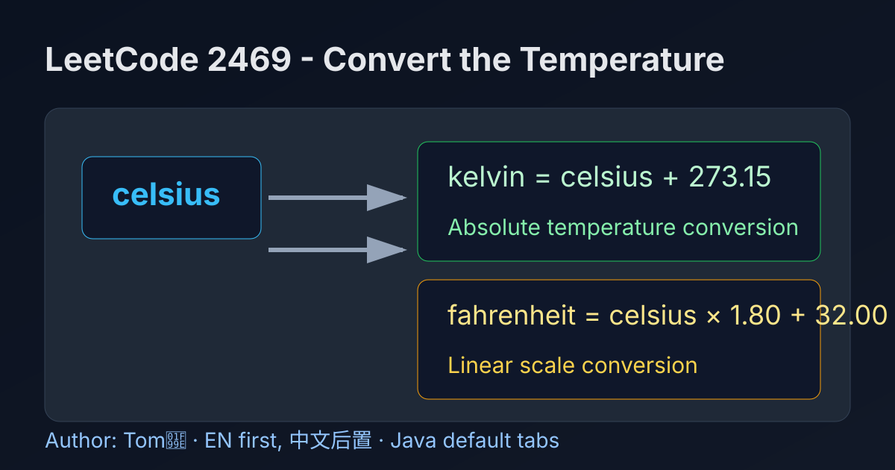

LeetCode 2469: Convert the Temperature (Direct Formula Conversion)
LeetCode 2469MathFormulaSimulationToday we solve LeetCode 2469 - Convert the Temperature.
Source: https://leetcode.com/problems/convert-the-temperature/

English
Problem Summary
Given a Celsius value celsius, return an array [kelvin, fahrenheit] where:
kelvin = celsius + 273.15fahrenheit = celsius * 1.80 + 32.00
Key Insight
This is a direct formula mapping problem. No loops, no extra structures, and no branching logic are required.
Brute Force and Limitations
There is no meaningful brute-force alternative. The optimal approach is immediate calculation with the two given formulas.
Optimal Formula Steps
1) Read celsius as floating point.
2) Compute kelvin = celsius + 273.15.
3) Compute fahrenheit = celsius * 1.80 + 32.00.
4) Return the two values in the required order.
Complexity Analysis
Time: O(1).
Space: O(1).
Common Pitfalls
- Returning values in wrong order (must be Kelvin first).
- Using integer math and losing decimal precision.
- Mistyping constants (273.15, 1.80, 32.00).
Reference Implementations (Java / Go / C++ / Python / JavaScript)
class Solution {
public double[] convertTemperature(double celsius) {
double kelvin = celsius + 273.15;
double fahrenheit = celsius * 1.80 + 32.00;
return new double[]{kelvin, fahrenheit};
}
}func convertTemperature(celsius float64) []float64 {
kelvin := celsius + 273.15
fahrenheit := celsius*1.80 + 32.00
return []float64{kelvin, fahrenheit}
}class Solution {
public:
vector<double> convertTemperature(double celsius) {
double kelvin = celsius + 273.15;
double fahrenheit = celsius * 1.80 + 32.00;
return {kelvin, fahrenheit};
}
};class Solution:
def convertTemperature(self, celsius: float) -> list[float]:
kelvin = celsius + 273.15
fahrenheit = celsius * 1.80 + 32.00
return [kelvin, fahrenheit]var convertTemperature = function(celsius) {
const kelvin = celsius + 273.15;
const fahrenheit = celsius * 1.80 + 32.00;
return [kelvin, fahrenheit];
};中文
题目概述
给定摄氏温度 celsius，返回数组 [kelvin, fahrenheit]，其中：
kelvin = celsius + 273.15fahrenheit = celsius * 1.80 + 32.00
核心思路
这是纯公式转换题。直接按定义计算两个结果并按顺序返回即可。
暴力解法与不足
本题没有必要设计枚举或模拟流程，最优解就是常数时间公式计算。
最优解步骤
1）读取浮点输入 celsius。
2）计算 kelvin = celsius + 273.15。
3）计算 fahrenheit = celsius * 1.80 + 32.00。
4）按 [kelvin, fahrenheit] 顺序返回。
复杂度分析
时间复杂度：O(1)。
空间复杂度：O(1)。
常见陷阱
- 返回顺序写反。
- 使用整型导致小数精度丢失。
- 常量写错（273.15、1.80、32.00）。
多语言参考实现（Java / Go / C++ / Python / JavaScript）
class Solution {
public double[] convertTemperature(double celsius) {
double kelvin = celsius + 273.15;
double fahrenheit = celsius * 1.80 + 32.00;
return new double[]{kelvin, fahrenheit};
}
}func convertTemperature(celsius float64) []float64 {
kelvin := celsius + 273.15
fahrenheit := celsius*1.80 + 32.00
return []float64{kelvin, fahrenheit}
}class Solution {
public:
vector<double> convertTemperature(double celsius) {
double kelvin = celsius + 273.15;
double fahrenheit = celsius * 1.80 + 32.00;
return {kelvin, fahrenheit};
}
};class Solution:
def convertTemperature(self, celsius: float) -> list[float]:
kelvin = celsius + 273.15
fahrenheit = celsius * 1.80 + 32.00
return [kelvin, fahrenheit]var convertTemperature = function(celsius) {
const kelvin = celsius + 273.15;
const fahrenheit = celsius * 1.80 + 32.00;
return [kelvin, fahrenheit];
};
Comments